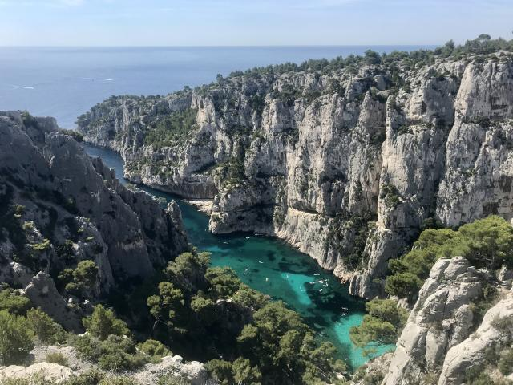

Découvrez la liste de tous les parcs et jardins à Marseille. En cœur urbain, en bord de mer ou plus éloignés de la ville, trouvez celui qui correspond à vos envies !
Parc borely
Situé dans le 8ème arrondissement de Marseille, juste à côté de l’hippodrome et des plages du Prado, le Parc Borély nous charme avec ses bassins, ses nombreuses sculptures et ses différents jardins. Il est l’endroit parfait pour pique-niquer, faire son sport ou tout simplement se détendre au soleil.
Parc de la Bagatelle
Le parc de la Bagatelle est un parc de la mairie des 6 et 8e arrondissements. Il s’étend sur 1,3 hectares de terrain. Ce parc est très apprécié des promeneurs. On y trouve des espèces végétales rares et un grand nombre de végétaux de sous-bois et horticoles. Le parc est doté de grandes allées ombragées et bordés de massifs de fleurs.
Parc longchamp
Il est un des plus beaux parcs de Marseille, et sans doute, un des plus appréciés des Marseillais. Situé en plein centre-ville, avec près de 8 hectares de verdure, il surprend dès notre entrée avec ses fontaines et ses cascades monumentales. Découvrez un lieu hors du temps à deux pas de la Canebière !
Parc du 26e centenaire
Situé en plein coeur de Marseille, le Parc du 26e centenaire s'étend sur 10,5 hectares. Il a été aménagé sur le site de l'ancienne gare du Prado. De conception très contemporaine, le parc s'inscrit cependant dans la mémoire commune, faisant référence aux vingt-six siècles d'histoire de la Ville. Certains vestiges conservés de la gare sont les témoins d'un passé encore vivant dans le souvenir de nombreux Marseillais. L'eau y est omniprésente et fait écho à "l'Arbre de l'Espérance" qui se dresse à l'entrée principale.

Parc national des calanques
Le parc national des Calanques est un parc national français, couvrant, notamment, les calanques de Marseille, dans le département des Bouches-du-Rhône, au cœur de la métropole d'Aix-Marseille-Provence. Créé en 2012, il est le premier parc national périurbain d'Europe à la fois terrestre et marin.